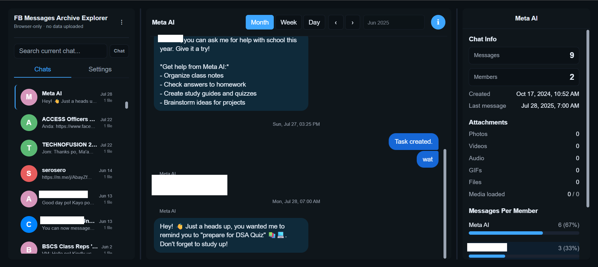

Viewing your message archive
Use FB Messages Archive Explorer to read your Facebook, Messenger, or Instagram JSON export in your browser. You can search conversations and view their attachments without uploading your files.
Open the app
Open an archive
- Download a message export in JSON format. Follow the export instructions for your account.
- Extract the ZIP files into one folder. Keep the folder structure and filenames, including any media folders.
- Open the app and click Select messages folder. Choose the extracted export folder or its
messagessubfolder. For a standalone Messenger export, choose the folder containing the conversation JSON files. - Select a conversation from the chat list after it loads.
Supported exports
Select your extracted export folder or the folder listed for your export type:
your_facebook_activity/messagesor a top-levelmessagesfolder.- Messenger
- A folder containing conversation
.jsonfiles and their exported media. your_instagram_activity/messages, including inbox and message requests.
Search and attachments
Search within the current conversation, or switch to All to search across chats. Use the date navigator to jump to a date. In the chat info panel, you can check message counts and participant activity.
Open the attachment gallery to browse photos, videos, audio, and files. Filter by type and select the attachments you want to download.
For offline use, open the app with an internet connection and wait for Ready for offline use. Revisit the site with a connection if you clear your browser's site data.
Privacy and folder access
You grant read access to a folder on your computer to view its messages. You can browse and search without uploading the archive or signing in to an account.
To bookmark attachments or delete chats, you must enable those features in Settings and grant write access in a supported browser. Keep the original ZIP files as a backup before deleting anything. You cannot undo a deletion.
You can review the source code and follow the README to run a local copy.
Troubleshooting
Folder not recognized
Check that you extracted the ZIP and chose a folder with JSON conversation files. If you downloaded an HTML export, request a new export in JSON format.
Missing photos or videos
Include media when requesting your export, and extract each downloaded part into the same folder. You can view attachments that Meta included in the download. For shared posts and reels, you may need to open a link to the original post.
Browser support
Use Chrome, Edge, or Brave for native folder access and the bookmarking and deletion features. In Firefox and Safari, you can browse messages and download attachments as ZIP files, but opening a large archive may take more memory and time.
Deleted messages
You can read messages included in your export. You cannot use this viewer to recover messages missing from the download.